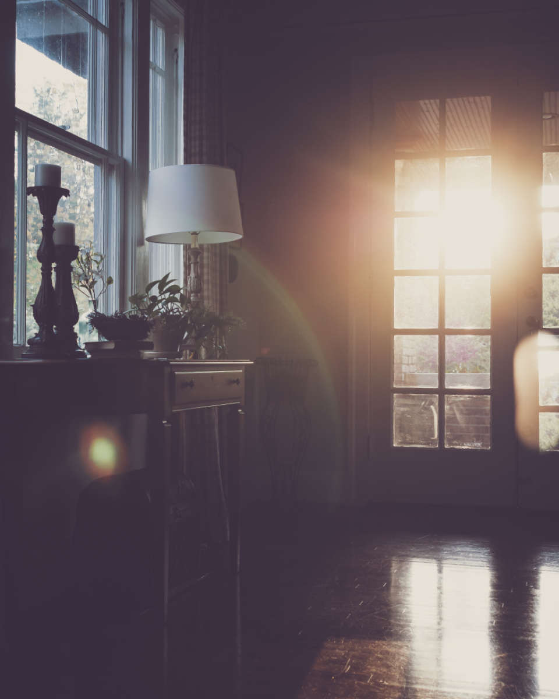
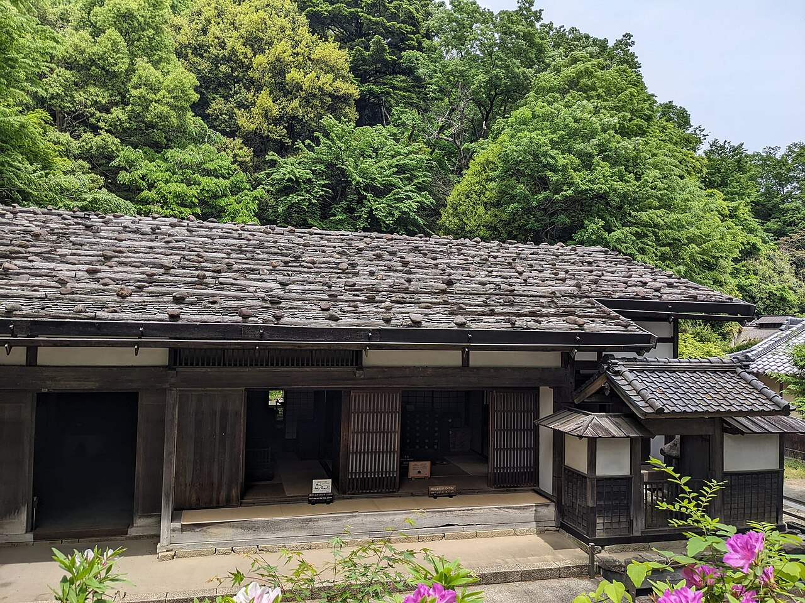
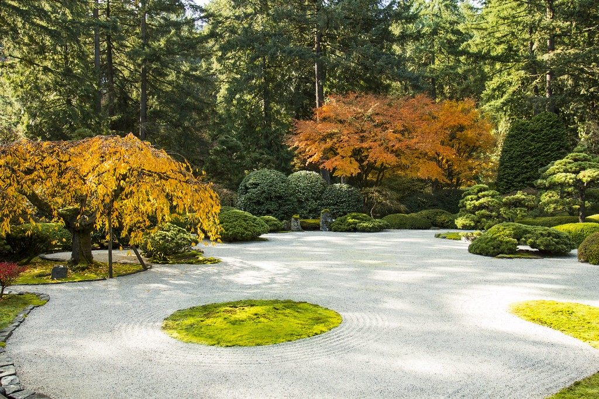

施工事例(イメージ)
掲載はすべて架空のイメージです
01
梁を活かして甦らせた、古い平屋の住まい
 Before イメージ
Before イメージ After イメージ
After イメージ- 建物タイプ
- 古家再生(戸建て)
- ご要望(例)
- 古い梁や柱の雰囲気を残しつつ、冬も過ごしやすい家にしたい。
- 工夫した点
- 構造を点検して傷んだ部分のみを補修し、味わいのある梁は見せる設計にしました。断熱と水まわりは現代の暮らしに合わせて更新しています。
- 使った素材(例)
- 既存の梁・柱の再利用、無垢の床材、漆喰の壁
掲載の写真はいずれも別物件のイメージで、実際の施工前後ではありません。
02
リフォーム(台所・内装)のイメージ
 After イメージ
After イメージ
Before イメージ- 建物タイプ
- リフォーム(戸建て)
- ご要望(例)
- 暗い室内を明るくし、家事の動きを楽にしたい。
- 工夫した点
- 壁の色と窓まわりを見直して光を取り込み、台所まわりの収納と動線を整理する想定です。床や建具は既存の雰囲気になじむよう選んでいます。
- 使った素材(例)
- 無垢の床材、木製の建具、塗り壁風の内装材
掲載の写真はいずれも別物件のイメージで、実際の施工前後ではありません。
03
風合いを残して整えた、古民家の外観

Before イメージ After イメージ
After イメージ- 建物タイプ
- 古民家の外観更新
- ご要望(例)
- 家の趣は残したまま、外まわりを傷みにくく整えたい。
- 工夫した点
- 劣化した外壁や軒まわりを部分的に補修し、既存の色味になじむ仕上げを選びました。
- 使った素材(例)
- 杉の板張り、瓦の再利用、自然系の塗料
掲載の写真はいずれも別物件のイメージで、実際の施工前後ではありません。
注文住宅のイメージ

和室
畳と木の香りに包まれる、落ち着いた一間。
障子越しのやわらかな光で、くつろげる空間に整えます。

階段
木の踏み板が心地よく手になじむ、家の中心の階段。
明るさと安全に配慮し、暮らしの動線に合わせて設計します。

造作家具
空間の寸法に合わせてつくる、棚や机などの家具。
暮らし方に寄り添い、住まいに自然となじむ収まりを目指します。
庭と外構

家の佇まいは、庭や門まわりでも決まります。建物と調和する植栽や塀、アプローチまでをあわせてご相談いただけます。(写真は見本のイメージです)
気になる事例があれば、お聞かせください。
ご要望に近い事例を、実際の暮らしに合わせてご提案します。お気軽にご相談ください。